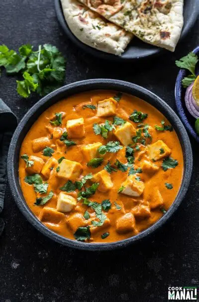

INGREDIENTS
- 250g paneer (cubed)
- 2 tablespoons oil or ghee
- 1 large onion, finely chopped
- 2 tomatoes, pureed
- 1 tablespoon ginger-garlic paste
- 1/2 cup fresh cream
- 1 teaspoon cumin seeds
- 1 teaspoon turmeric powder
- 1 teaspoon red chili powder
- 1 teaspoon garam masala
- 1 teaspoon coriander powder
- Salt to taste
- Fresh coriander leaves for garnish
INSTRUCTIONS
- Heat oil in a pan. Add cumin seeds and let them splutter.
- Add chopped onions and sauté until golden brown.
- Add ginger-garlic paste and cook for 2 minutes until raw smell disappears.
- Pour in the tomato puree and cook until oil separates from the masala.
- Add turmeric, red chili powder, coriander powder, and salt. Mix well.
- Add the paneer cubes and gently mix to coat them with the masala.
- Pour in fresh cream and garam masala. Stir gently and simmer for 5 minutes.
- Garnish with fresh coriander leaves.
- Serve hot with roti, naan, or rice.